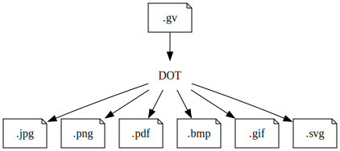

Última modificação em 09/07/2025 às 22:14 horas.
Graphviz: Um guia introdutório
Introdução
Este guia possui como objetivo apresentar e explicar conhecimentos básicos para o emprego do pacote de software Graphviz. No entanto, antes de expor conceitos fundamentais e o modo de uso da Graphviz, pretendo resumir no próximo tópico o que ela é e os seus principais usos.
Definição e Usabilidade
Conforme a documentação oficial, a Graphviz (contração de graph visualization, isto é, em português, visualização de grafos) é um software manipulável via comandos de texto e projetado para o desenho automático de grafos, isto é, de esquemas visuais compostos essencialmente por nós e arestas – conceitos posteriormente definidos neste guia –, tornando essa ferramenta recomendada para o esboço da organização de bancos de dados, a formalização de árvores genealógicas, hierarquias, organogramas e heredogramas, engenharia de software, design web e para o planejamento de redes de micros, além de outras possíveis finalidades mencionadas no site oficial do programa. Logo abaixo, estão alguns exemplos de trabalhos feitos com o software.


Instalação
Oficialmente, a Graphviz é desenvolvida para Windows, MacOs e distribuições Linux, por meio de arquivos de instalação diferentes disponíveis na seção de downloads do site oficial localizada neste link. Por isso, é recomendável o acesso desse endereço e a leitura das instruções da página, de acordo com o sistema operacional em uso na máquina a ser utilizada.
Uso Básico
Quando devidamente instalada, a Graphviz, sendo ela um pacote de ferramentas, fornece os seguintes programas: dot, neato, fdp, sfdp, circo, twopi, nop, osage e patchwork. E todos estes possuem o objetivo de gerar grafos; no entanto, formando esquemas visuais com elementos dispostos e organizados de modos diferentes para adequar o resultado a necessidades distintas. Porém, pretende-se demonstrar neste guia apenas o dot, pois ele basta para desenhar os mais comuns tipos de grafos.
E, assim como as outras ferramentas embutidas na Graphviz, o dot, para construir as imagens finais semelhantes às na introdução, lê um arquivo criado pelo usuário contendo a descrição do grafo a ser desenhado, por meio de uma linguagem de marcação também chamada dot, interpreta-o e, finalmente, salva o esboço resultante em um arquivo de imagem, similarmente a este exemplo:

No arquivo inicialmente escrito pelo usuário, cuja extensão é, por convenção, “.gv”, pode-se descrever dois tipos distintos de grafos, os direcionados e os não direcionados. Os grafos direcionados, como induz o nome, são constituídos de elementos interligados por setas com um sentido definido, isto é, com uma sucessão. De modo contrário, os não direcionados não expressam sequências, apenas relações; por isso, suas ilustrações contêm, em vez de setas, linhas.